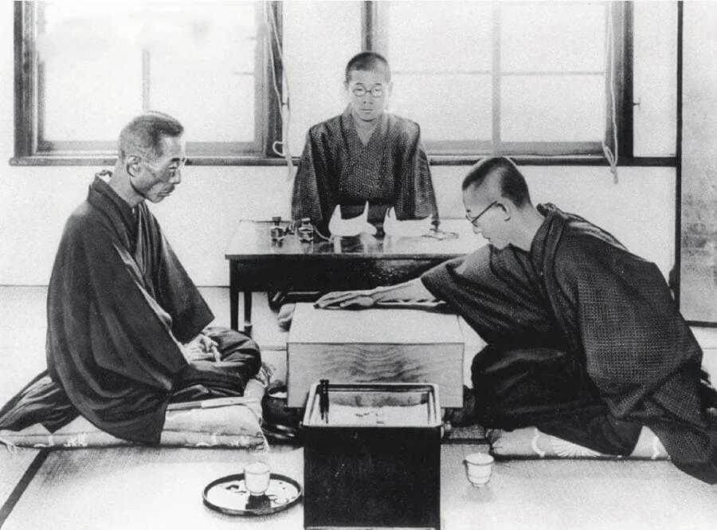
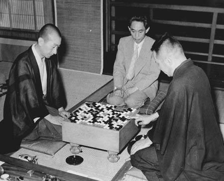

1933년 일본.
당시 일본 바둑계에는 혼인보 슈사이라는 종신 명인이 있었음.
말 그대로 바둑계 최고 권위자였고, 죽을 때까지 명인 자리가 보장되는 사람이었음.

그런데 당시 19살이었던 중국 출신 천재 기사 오청원이 등장함.
기존 바둑 이론을 뒤집는 새로운 포석으로 일본 바둑계를 뒤흔들던 인물이었음.
결국 1933년, 요미우리신문이 둘을 붙이기로 함.
일본 최고의 종신 명인 vs 19살 천재.

대국이 시작되자 오청원은 초반부터 바둑판 정중앙에 돌을 놓는 파격적인 수를 선보임.
당시로서는 상당히 도발적인 포석이었고, 슈사이 측에서는 명인에 대한 무례라고 받아들이기도 했음.
그런데 대국이 진행되자 오히려 오청원이 유망한 형세를 만들어 가기 시작함.
문제는 여기서부터였음.

당시에는 명인이 대국을 중단할 수 있는 특권이 있었음.
게다가 현대처럼 다음 수를 미리 정해 놓는 봉인수 제도도 없었음.
즉, 슈사이는 자기 차례에 생각하다가 그냥 집에 가서 다음 수를 연구할 수 있었음.
심지어 집에는 함께 바둑을 검토할 제자들도 있었음.
그리고 슈사이는 이 권한을 무려 13차례나 사용함.

특히 대국 8일째에는 황당한 일이 벌어짐.
슈사이가 백을 둠.
오청원이 2분 만에 응수함.
슈사이가 3시간 30분 동안 고민함.
그러더니...
"오늘은 여기까지 하겠소."
ㅋㅋㅋㅋㅋㅋㅋㅋ
결국 1933년 10월에 시작한 대국은 해를 넘겨 1934년 1월까지 이어짐.
바둑 한 판에 3개월 넘게 걸린 거임.

그런데도 오청원이 유망한 형세를 유지하던 중,
대국 13일째 슈사이가 백 160수라는 기가 막힌 묘수를 둠.
이 수로 형세가 뒤집히면서 결국 슈사이가 2집 차이로 승리함.
그런데 나중에 황당한 의혹이 제기됨.
"그 묘수 사실 슈사이가 아니라 제자 마에다가 찾아낸 거 아니냐?"
심지어 마에다 본인도 명확하게 부인하지 않았다고 함.
물론 실제로 제자가 대신 찾아준 수인지는 확인되지 않았음.

그로부터 5년 뒤인 1938년.
슈사이는 기타니 미노루와 은퇴 대국을 치름.
그런데 이번에는 기타니 측이 대국을 중단하려면 다음 수를 미리 봉인하라고 요구함.
슈사이 측은 처음에 반대했지만 결국 받아들임.
그리고 결과는?
슈사이 5집 차이 패배.
ㅋㅋㅋㅋㅋㅋ
물론 봉인수 때문에 졌다고 단정할 수는 없음.
하지만 19살 천재를 상대로 13번이나 대국을 중단하고, 제자들과 검토까지 하면서 승리했던 명인이
후대에는 오히려 그 특권 때문에 기억되고 있다는 게 참 아이러니함.
존나 추하네